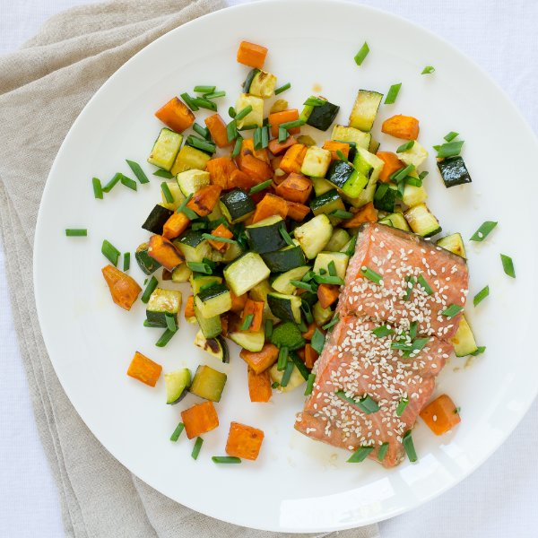

Asian-Style Salmon with Roasted Zucchini & Sweet Potatoes

Prep Time
35 min
Nutrition (per serving)
588 kcalCalories
43.5 gProtein
45.9 gCarbs
26.1 gFat
Full nutrition table
| Calories | 588 kcal |
| Total fat | 26.1 g |
| Saturated fat | 4.5 g |
| Trans fat | 0 g |
| Cholesterol | 76.5 mg |
| Sodium | 193.9 mg |
| Carbohydrates | 45.9 g |
| Fiber | 8.1 g |
| Sugars | 14.2 g |
| Protein | 43.5 g |
| Potassium | 1940.9 mg |
| Calcium | 172.7 mg |
| Iron | 3.5 mg |
| Vitamin A | 25004.9 IU |
| Vitamin C | 46.7 mg |
| Vitamin D | 614.1 IU |
Cookware
Ingredients
- 4 clovesgarlic
- 2 (1 inch) piecesginger root
- 1 small bunchgreen onions (scallions)
- 1 ½ lbsalmon fillet
- 1 ½ lbsweet potatoes
- 4 mediumzucchini squash
- black pepper
- extra virgin olive oil
- honey
- salt
- sesame seeds
- soy sauce
- toasted sesame oil
Steps
- Preheat the oven to 425°F.
- Wash and dry the fresh produce.1 ½ lb sweet potatoes
4 medium zucchini squash
1 small bunch green onions (scallions)
2 (1 inch) pieces ginger root - Peel and medium dice the sweet potatoes into ½-inch cubes; transfer to a large baking sheet.
- Trim and discard the ends of the zucchini; medium dice the zucchini into ½-inch cubes and add to the baking sheet.
- Peel and mince the garlic; sprinkle over the vegetables.4 cloves garlic
- Drizzle the vegetables with olive oil and season with salt and pepper; toss to coat, then arrange in a single layer.2 tbsp extra virgin olive oil
½ tsp salt
½ tsp black pepper - Place the vegetables in the oven (even if it is not fully heated yet) and cook for 10 minutes while you prepare the salmon.
- Peel and mince or grate the ginger; transfer to a medium bowl (that can hold the salmon).
- Add soy sauce, olive oil, sesame oil, and honey to the ginger; whisk together.2 tbsp soy sauce
2 tbsp extra virgin olive oil
1 tsp toasted sesame oil
1 tsp honey - Place the salmon in the bowl and coat with the sauce.1 ½ lb salmon fillet
- Take the baking sheet out of the oven and move the vegetables to the sides of the tray; place the salmon, skin-side-down, in the middle of the tray and pour any remaining marinade overtop.
- Return the tray to the oven and bake until the salmon is cooked through and the vegetables are tender, another 10 to 12 minutes.
- While the vegetables and salmon cook, trim and discard the ends of the green onions; chop the onions on an angle into ¼-inch pieces.
- To serve, place the roasted vegetables and salmon on a plate and sprinkle with the green onions and sesame seeds.1 tsp sesame seeds